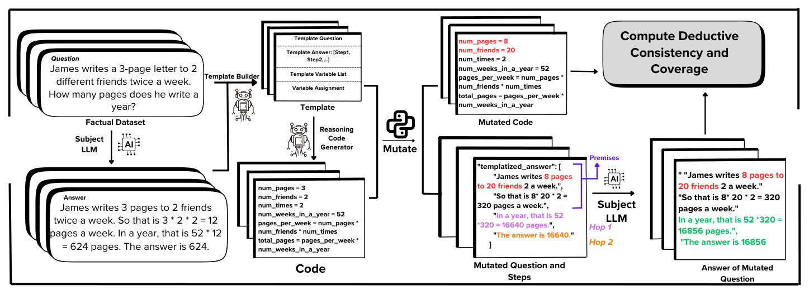
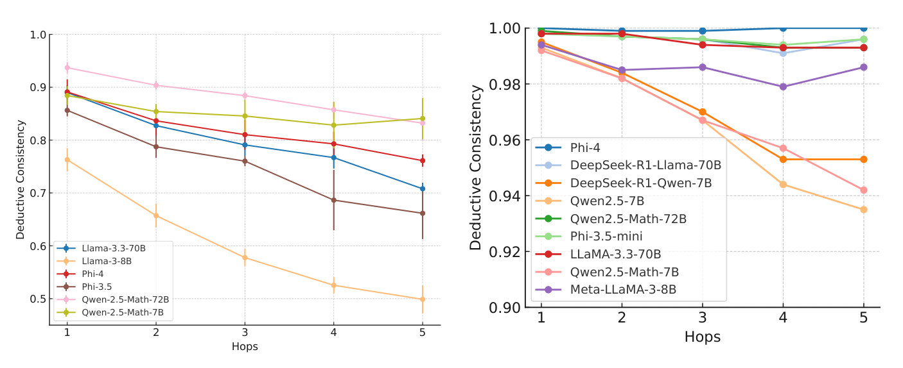
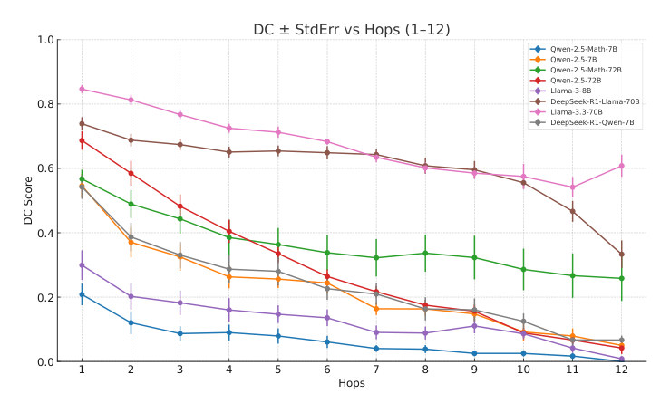

paper walkthrough · ICLR 2025 Workshop on Reasoning and Planning
Do language models reason, or just remember? Count the hops
Frontier models ace Olympiad problems and still stumble on high-school maths they haven’t seen. DeduCE grades the chain of thought instead of the final answer, and shows that models cope with long inputs far better than with long chains of inference.
How to read this. This post walks through the whole paper in order: the metric, the pipeline that builds novel problems, the three datasets, every result, the error analysis, and the mitigation experiments. The four figures labelled “From the paper” are the paper’s own. Figures A, B and C are interactive and use the paper’s example and the numbers from its tables.
0The short version
- Metric. Deductive consistency (DC) checks each step of a model’s chain of thought against a reference proof, given a prefix of that proof, at a chosen number of hops.
- Two subtasks, measured separately. Vary the prefix length k to test how well a model understands more premises. Vary the hop count l to test how well it infers conclusions over a longer horizon.
- Novel problems. A pipeline turns a benchmark problem into a template plus code, then mutates the numbers, so answers cannot be memorised.
- Main result. On GSM8K and ProntoQA, DC stays flat as the prefix grows but decays as the number of hops grows. On the original GSM8K problems the decay is invisible: DC is 1 for every model.
- Why it fails. Errors are mostly calculation and logic errors. Reinforcement learning, supervised fine-tuning and a calculator tool reduce some errors but do not remove the decay.
1Why grade more than the final answer?
Deductive reasoning has two parts: understanding a set of input premises, and inferring the conclusions that follow from them. A benchmark that reports only final accuracy mixes both together, and it also mixes in memorisation: if a model has seen a problem, or near copies of it, a right answer says little about whether it can deduce anything.
The ideal test would need an oracle that can verify any candidate conclusion from the premises, which means computing the full deductive closure. That is almost never available. DeduCE instead asks for something practical: one correct solution per problem, and a way to check a model’s steps against it.
The paper places itself among three lines of work:
- Evaluating beyond memorisation with synthetic data (DyVal) or perturbed versions of existing datasets for maths (GSM-Symbolic, DARG), analogical reasoning and deductive reasoning (RobustLR).
- Metrics beyond final accuracy: answer plus explanation correctness, deductive competence tests, faithfulness of chain of thought, and detecting or fixing errors in a given solution.
- Deductive reasoning in LLMs: LogicBench, JustLogic, syllogisms and intuitionistic proving, almost all scored by final accuracy.
DeduCE aims to be one general metric for any task where reasoning can be written as steps.
2Defining deductive consistency
The setup
Take a proof system with a language L and inference rules R. A problem is a set of premises P and a target predicate t. The deductive closure Th(P) is everything provable from P. The paper’s toy example uses statements of the form X→Y with transitivity as the only rule.
Premises: A→B; B→C; B→D; C→F; D→F; E→F; F→G. Target: A→G.
A reasoning system answers with A→D; A→E; E→G.
Step 1: per-predicate consistency
With a complete proof system we can check each step the system writes, given the premises and its own earlier steps:
In the example, A→D is fine, A→E does not follow from the premises, and E→G does. So Cons is 2 of 3, about 0.67, even though the proof reaches A→G. Final accuracy would say 1 and hide the wrong step.
Step 2: give the model a correct prefix
If step j is wrong, every later step depends on a wrong premise. So the paper adds the first k steps of a correct reference proof to the premises, P′ = P ∪ Rk(P, t), and lets the system complete the proof:
With k = 1 the reference adds A→C and the system may still go wrong. With k = 2 it adds A→C and A→F and completes A→G correctly. As k grows we learn how well the system handles a longer list of premises.
Step 3: fix the right-censoring problem with hops
There is a catch. The more of the proof you hand over, the fewer inference steps are left. DC can therefore rise with k simply because the problem got easier. This is a right-censoring issue: the difficult far end of the chain is only reached by short prefixes. So the paper adds a second parameter, the number of hops l: the number of inference steps at which the system is checked.
Give the model the question plus a prefix of k reference steps, let it generate, and check step k + l. Vary k and you study premise understanding. Vary l and you study deductive inference. One problem now yields many evaluation instances instead of one final answer.

Base, decay and the ideal reasoner
To summarise a whole curve the paper defines two numbers. Base is the DC at the first hop. Decay is the negative slope of the best-fit line of DC against hops, with hops rescaled to run from 0 to 1 by dividing by the maximum number of hops ℓmax:
An ideal reasoner has a base close to 1 and zero decay, independent of both the number of premises k and the number of hops l. Decay is a per-model slope, so a decay of 0.2 means a model loses about 0.2 of its consistency over the full range of hops.
When only one reference proof exists
Even a single correct proof is enough, but there is a price. With only a reference solution S(P, t) we can verify only the predicates that appear in it. So the metric asks whether the reference’s step k + l shows up in the model’s proof:
This can underestimate consistency. In the toy example the reference proof is A→C; A→F; A→G. A valid alternative, A→D; A→F; A→G, scores 0 at (k, l) = (0, 1) because A→C is missing. The paper therefore reports coverage, the share of the reference solution’s variables that the model’s solution also infers:
DC results are only interpretable when coverage is high. The paper’s coverage table shows it is high across premise styles, which means the models’ solutions to the novel problems infer almost the same variables as the reference.
3Building the evaluation: a pipeline for novel problems
Two practical requirements: a reference solution that can verify intermediate steps, and problems the model has not memorised.
When a correct solution is known
If a dataset comes from source code, that code is the reference. For each prefix k, show the SubjectLM the question and the prefix, let it write a chain of thought, and use a Variable Extraction LM (the parser) to read predicate values out of the natural language. Check each value against the computation graph of tCode at every hop, then average over the dataset to get DedCons(k, l).
When the dataset is real-world and needs novel problem generation
For sources like GSM8K there is no generating code, and memorisation is a real worry. The paper builds novel versions of each problem and gets a reference solution from an auxiliary model on the original one. It deliberately exploits memorisation here: a model that has seen the problem is more likely to write the correct reference.
- Generate, then verify. An expert LM writes the solution in two equivalent forms: a templatised chain of thought (
tCoT) and executable code (tCode). The chain of thought comes first so the reasoning is laid out clearly. - Check consistency. For the factual inputs,
tCodeandtCoTmust yield identical intermediate values at each step. Only then is the code accepted as a symbolic encoding of the problem and its correct solution. - Mutate. Sample new seed premises (random integers under 100, no large numbers or floats), run
tCodeto get the intermediate values, and reinsert them into the templated questiontQandtCoT. The result is a new question Q′ with a fresh, correct ground-truth chain of thought.
Other perturbations, such as renaming variables or adding irrelevant facts as in GSM-Symbolic, would plug into the same code. Three auxiliary models do the transformations: a Templatization LM for tQ and tCoT, a Code Generation LM for tCode, and the Variable Extractor for reading model outputs.

4The datasets
- GSM8K. A random subset of 1,000 problems. Responses from the models under evaluation are filtered through the pipeline, and the problems that survive for every model form the final set: 165 problem instances, each with 10 counterfactual samples.
- SynDeduct. The authors’ own synthetic generator, built for long reasoning chains with fine-grained control. A question can be steered from a starting premise A to an intermediate node I (the prefix k) and then from I to the target B (the hop l), so that Distance(A, B) = k + l. It samples DAGs of constants, variables and arithmetic operators, extracts paths as programmatic reasoning traces, and verbalises them with templates. Because the computation graph is known, no code generation or templated chain of thought is needed. Questions are binned by number of hops, mixing different prefix lengths inside each bin. Operators are limited to addition and subtraction to avoid inflating calculation errors.
- ProntoQA. Synthetic logical reasoning with Modus Ponens in natural language. The paper generates up to 5 hops with 100 questions per hop for each of three ontologies (true, false, fictional). Each statement in a chain of thought is converted to first-order logic and checked with the Z3 solver.
5Experimental setup
- Pipeline models. Llama-3-70B-Instruct acts as templatiser, code generator and variable extractor. About 30% of generations fail to produce valid JSON and are filtered out, with further sanity checks on top. Llama-3.1-8B-Instruct is the parser. Z3 verifies ProntoQA predicates. GPT-4o is used only for error analysis.
- Models evaluated. Phi-3.5-mini, Phi-4, Qwen2.5-Math-7B, Qwen2.5-Math-72B, Llama-3.3-70B, Llama-3-8B, and R1-distilled variants. All are instruction-tuned.
- Compute. One node with four Nvidia A100 80GB GPUs.
6Results on GSM8K: premises versus inference
Memorisation hides everything
On the original benchmark, DC is a constant 1 across hops for every model. On the perturbed problems it is significantly lower. That gap is the memorisation effect, and the decay over hops, which the original benchmark masks, is the paper’s key result.

Base and decay by model
Larger models (Qwen2.5-Math-72B, Llama-3.3-70B), models trained on synthetic data (Phi-4) and maths-specific models reach higher base values, but even these decay as hops increase. Small models such as Llama-3-8B and Phi-3.5-mini have lower bases, and Llama-3-8B has the steepest decay. Concretely, from hop 1 to hop 5: Llama-3.3-70B goes from 0.890 to 0.708, Phi-4 from 0.891 to 0.761, Qwen2.5-Math-72B from 0.937 to 0.832 and Llama-3-8B from 0.763 to 0.499.
Premises hardly matter
Deductive consistency changes little as the prefix grows (Table 12 in the paper, reproduced in Figure C). Llama-3.3-70B, for example, sits between 0.79 and 0.80 for every prefix from 1 to 5. So the evidence points to a hypothesis with two halves: consistency depends on hops, but not on premises. The paper flags one caveat: GSM8K problems are simple, so the longest prefix it could test is 7.
Two hypotheses about why accuracy drops on novel problems
Earlier work reports lower accuracy on novel maths problems. DC lets the paper test two explanations.
- H1: novel problems cause early errors that propagate. DC at the first hop remains high, so models do get the first step right. Novel problems do not cause early errors. They do cause frequent calculation slips, and those slips propagate, so H1 holds only in part.
- H2: novel problems change the style of the chain of thought, which causes faulty reasoning. To test it, the paper adds premises in four styles: the original wording from the model’s answer to the benchmark problem, and three paraphrases. Vanilla rewords conventionally. Axiomatic restates the fact as an axiom, such as “ADD(60, 12) yields 72”. Reverse puts the effect before its cause: “Yasna has to read the 72 pages, which is the sum of 60 and 12”. Base values dip slightly for the paraphrases. The differences are statistically significant at 0.05 in a t-test, but Cohen’s d is below 0.1, so the effect is tiny. The paper concludes there is only weak evidence for H2.
7Results on SynDeduct: a longer horizon
GSM8K stops at five hops, so SynDeduct is designed for chains up to twelve hops long. The trend agrees with GSM8K: DC falls as hops increase. Larger models are more resilient, while smaller models such as Llama-3-8B collapse. Qwen2.5-Math-7B starts at 0.21 at hop 1 and reaches 0 at hop 12. Llama-3.3-70B goes from 0.85 to 0.61, and DeepSeek-R1-Distill-Llama-70B from 0.74 to 0.33.

On SynDeduct the paper also notes that accuracy falls as the prefix segments grow for some models. It offers the larger token budget as a possible factor, then argues against context length as the cause: the task never exceeds about 10k tokens, and every model except Llama-3-8B has a context window well beyond that.
8Results on ProntoQA
ProntoQA is built for multi-hop factual reasoning, and Figure 2 (right) shows a consistent decay with hops. The absolute values are high, mostly between 0.93 and 1.0. Phi-4, the 70B models and Qwen2.5-Math-72B stay close to 1, while several 7B models slip to roughly 0.94 to 0.95 by hop 5. Phi-4 also shows negligible decay with the prefix, which the paper suspects is because it is trained on similar synthetic data. The overall pattern matches GSM8K and SynDeduct.
9Where do the errors come from?
To label errors the paper groups GSM8K problems by how many of their mutated variants a model gets right (from all right to all wrong) and uses GPT-4o to categorise the mistakes. It uses three categories on GSM8K:
- Calculation. Arithmetic and rounding slips, plus errors carried forward from an earlier slip.
- Logic. Wrongly applying a rule, operator or formula.
- Understanding. A wrong assumption about, or contradiction of, a stated fact. This shows up when a problem is far from the real world, such as a week with 97 days.
Calculation errors are the largest category, and they occur inside the chain of thought during arithmetic. The paper gives one example of each kind.
Logic. Two vampires arrive in a village of 33 people. Each night every vampire turns 95 people into vampires. Qwen2.5-Math-72B computes 192 vampires after night one and then 192 × 95 = 18,240 new vampires on night two, ignoring that the village only has 33 people.
Understanding. James writes a 36-page letter to 71 friends 32 times a week. Phi-4 computes 36 × 71 pages a week and never uses the 32, misreading the setup as one letter per friend per week.
Calculation. Max collects trains (53 per birthday, 18 per Christmas, for 16 years, then his parents double the total). Llama-3-8B correctly gets 1,136 trains, then writes 1,136 × 2 = 2,268 (it is 2,272). The final 3,404 is a propagated error, and the right total is 3,408.
Two more findings from the qualitative study. First, models show a pretraining bias: they reproduce the reasoning graph of the vanilla solution even when the mutated problem changes it. Second, some logic errors come from ambiguous natural language. A phrase like “my brother is twice more older than me” should arguably be myAge + myAge × 2, but models read it as 2 × myAge, which is what “twice as old” means.
On SynDeduct the categories are stricter
The paper defines them by what went wrong at one step: Calculation is right operands and operator with wrong arithmetic (7 − 7 = −3). Logic is right operands with the wrong operator (writing + where the step said “difference”). Understanding is the wrong operands or a misread definition (using T instead of Y). Garbled is an incoherent answer or repeated backtracking, and Exit covers cases where the analysing model’s output could not be parsed.
Calculation errors dominate at every prefix and hop level. Understanding errors are present and roughly constant, and logic errors are rare. A large share of errors are garbled, which the authors flag as a concern: they tried recommended sampling and prompt settings and different serving stacks (vLLM, transformers) without changing it, and other models (Phi-4, Qwen 7B, Qwen 7B R1) do much better under identical conditions. They leave this failure mode for future work.
10Do prevalent techniques fix the decay?
The paper tests three ideas, each compared against a matching baseline.
- Reinforcement-learning-style fine-tuning (Qwen2.5-Math-Instruct, 7B and 72B, against the Qwen2.5 base models).
- Supervised fine-tuning (DeepSeek-R1-Distill-Qwen-7B and Llama-70B against their bases).
- Calculator tool calling at inference time. A Llama-8B model acts as an online monitor made of a reviewer and an editor. As a response is generated step by step, the reviewer checks whether a calculation is present and calls a calculator. The editor rewrites the step with the correct result and generation continues.
Findings. RL is the more effective of the two at cutting decay: base DC changes little on in-distribution data and drops on unseen data such as SynDeduct. SFT lowers DC and worsens decay on both datasets. The calculator monitor raises base DC by up to 15% but leaves decay unchanged. Neither post-training technique consistently improves deductive consistency across models and datasets. A calculator only targets arithmetic, not misconceptions, faulty inferences or hallucinated premises, so understanding and logic errors remain even when calculation errors are driven to a minimum.
| Table 1 · RL post-training on SynDeduct | ||
|---|---|---|
| Model | Base | Decay |
| Qwen-2.5-72B-Instruct | 0.6868 | 0.0602 |
| Qwen-2.5-Math-72B-Instruct | 0.5674 | 0.0273 |
| Qwen-2.5-7B-Instruct | 0.5458 | 0.0432 |
| Qwen-2.5-Math-7B-Instruct | 0.2083 | 0.0211 |
| Table 2 · SFT post-training on SynDeduct | ||
|---|---|---|
| Model | Base | Decay |
| Qwen-2.5-Math-7B-Instruct | 0.2083 | 0.0211 |
| DeepSeek-R1-Distill-Qwen-7B | 0.5424 | 0.0381 |
| Llama-3.3-70B-Instruct | 0.8465 | 0.0212 |
| DeepSeek-R1-Distill-Llama-70B | 0.7389 | 0.0314 |
| Table 3 · RL post-training on GSM8K | ||
|---|---|---|
| Model | Base | Decay |
| Qwen-2.5-72B-Instruct | 0.9149 | 0.2339 |
| Qwen-2.5-Math-72B-Instruct | 0.9164 | 0.1725 |
| Qwen-2.5-7B-Instruct | 0.8881 | 0.1618 |
| Qwen-2.5-Math-7B-Instruct | 0.8427 | 0.1189 |
| Table 4 · SFT post-training on GSM8K | ||
|---|---|---|
| Model | Base | Decay |
| Qwen-2.5-Math-7B-Instruct | 0.8509 | 0.0613 |
| DeepSeek-R1-Distill-Qwen-7B | 0.8468 | 0.1957 |
| Llama-3.3-70B-Instruct | 0.8532 | 0.2007 |
| DeepSeek-R1-Distill-Llama-70B | 0.8366 | 0.2490 |
| Table 5 · Llama-3-8B-Instruct with and without the calculator monitor | ||
|---|---|---|
| Setting | Base | Decay |
| Without monitor | 0.7629 | 0.3300 |
| With monitor | 0.9081 | 0.3704 |
Read Table 3 next to Table 1: in each pair the RL-tuned Math model has the smaller decay, but on SynDeduct it also has the lower base. In Tables 2 and 4 the R1 distilled models show a higher decay than the models they are compared against.
11Conclusion and limitations
The paper introduces a metric for deductive reasoning that needs only a text-based reasoning trace, so it applies across domains. Experiments on two synthetic datasets (SynDeduct, ProntoQA) and one real-world benchmark (GSM8K) expose the trade-offs, and the mitigation study shows that common enhancements do not close the gap.
Two limitations are stated plainly. The approach relies on auxiliary language models for parsing, error analysis and data pipelining, and residual inaccuracies may persist despite the measures taken. And the evaluation covers only linear reasoning traces; extending the framework to non-linear inference chains is future work.
12Takeaways
- If you evaluate on published benchmarks only, you may be measuring recall. Perturbing the numbers reveals decay that is completely hidden on the original problems.
- Long inputs are not the main problem. Long chains of inference are. Deductive consistency stays flat as more premises are given and declines as more hops are needed.
- Most failures at each hop are arithmetic and logic slips, not misreading the question, and current fixes such as RL, SFT and a calculator do not remove the decay.
- Report base and decay, and check coverage before trusting either one.
Read the paper: OpenReview PDF · an earlier version is on arXiv